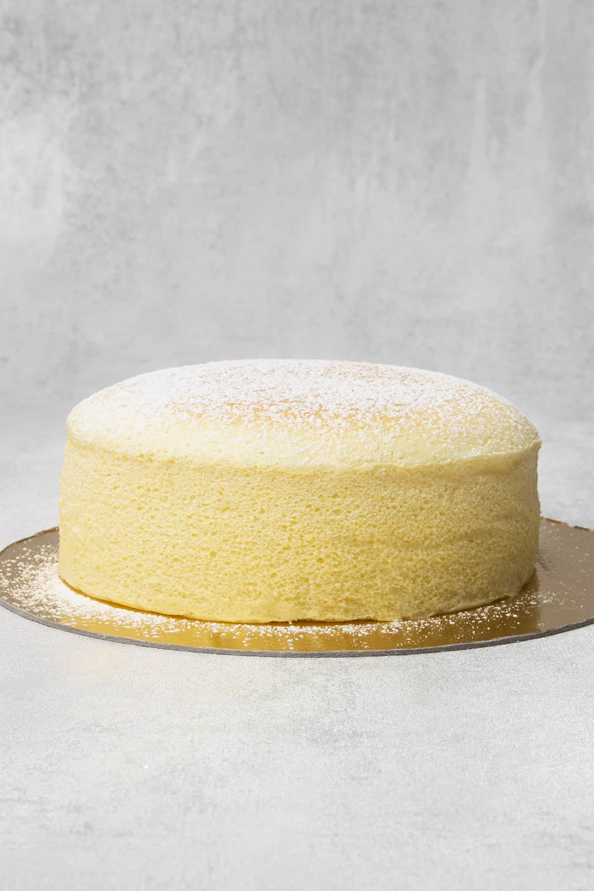

Japanese Jiggly Cheesecake

Description
Japanese jiggly cheesecake (souffle style cheesecake, cotton cheesecake) has a characteristically wobbly, airy texture similar to a souffle when fresh out of the oven and a chiffon cake-like texture when chilled.
The recipe was created by Japanese chef Tomotaro Kuzuno who was inspired by kasekuchen cheesecake (a German variant) during a trip to Berlin in the 1960s. It is less sweet and has fewer calories than standard Western-style cheesecakes, containing less cheese and sugar. It is a crustless cheesecake and traditionally made in a bain-marie (water bath) similar to most baked cheesecakes.
Ingredients
- 180 g (3/4 cups) Cream cheese Philadelphia
- 30 g (2 tablespoons) Unsalted butter
- 50 g (1/5 cups) Whole milk
- 35 g (1/3 cups) Pastry flour Ideally use low protein content flour. Can be substituted with all purpose flour
- 10 g (1 1/4 tablespoon) Corn starch
- Pinch of salt
- 75 g Egg yolk yolk of approx 4 eggs
- 125 g Egg white white of approx 4 eggs
- 50 g (1/4 cups) Superfine sugar
Steps
- Start with preparing a 15 cm (6 inch) round cake pan with parchment paper and pre-heating the oven with a water bath in it
- Pulse blend granulated sugar to superfine sugar then measure
- Heat cream cheese, butter, and milk in a saucepan on low heat until completely smooth. Remove it from the heat
- Mix egg yolks into the cream cheese mixture, one at a time, mixing after each addition
- Sift dry ingredients (cornstarch, salt and flour) and fold into the cream cheese-egg yolk mixture. Fold until mixture well combined and without any lumps
- Whip egg whites starting on low speed on your Stand mixer or with an Electric hand mixer
- Start adding one tablespoon superfine sugar at a time really slowly while increase the speed of your mixer. Once all the sugar in, whip for a few more minutes until soft peaks form and the sugar completely dissolves. Remember, do not overbeat to stiff peaks, check the consistency of the meringue regularly to avoid over beating
- With the help of a Rubber spatula gently fold the meringue into the rest of the ingredients. The batter should stay fluffy
- Pour batter into the prepared 15 cm (6 inch) round cake pan
- Bake the cheesecake in the water bath at 150C / 302F (no fan) for 30min then lower temp to 110C / 230F (no fan) and bake for another 60min. Make sure your oven is at the right temp by using a Digital oven thermometer
- Once the cheesecake is nicely baked; remove it from the oven, flip it over with the help of a plate, then flip it back with the help of another plate
- Enjoy while it is warm and jiggly, or serve it chilled withing 1-2 days
- Store in the fridge
Link to original recipe
Jiggly Japanese Cheesecake Recipe - Katalin Nagy for Spatula Desserts